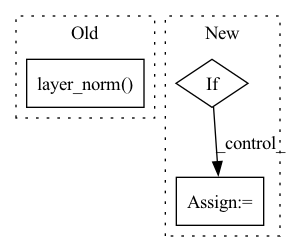

Pattern ID :11293

Before Change
scale = tensor_fn(scale, dtype, device)
offset = tensor_fn(offset, dtype, device)
true_res = tensor_fn(true_res, dtype, device)
ret = ivy.layer_norm(x, norm_idxs, scale=scale, offset=offset)
// type test
assert ivy.is_ivy_array(ret)
// cardinality test
assert ret.shape == true_res.shape
After Change
shape = data.draw(helpers.get_shape(min_num_dims=1))
x = data.draw(helpers.array_values(dtype=input_dtype, shape=shape))
normalized_idxs = data.draw(helpers.get_axis(shape=shape))
if type(normalized_idxs) == int:
normalized_idxs = [normalized_idxs]
else:
normalized_idxs = list(normalized_idxs)
scale, offset = tuple(data.draw(helpers.array_values(input_dtype, shape=(2,))))
In pattern: SUPERPATTERN
Frequency: 3
Non-data size: 3
Instances
Fragment ID: 38453747
Project Name: ivy-dl/ivy
Commit Name: 3a35cc957af1de4eea8481fc6d8f56ad3b18cceb
Time: 2022-06-13
Author: 54766411+VedPatwardhan@users.noreply.github.com
File Name: ivy_tests/test_ivy/test_functional/test_nn/test_norms.py
M Class Name: AnonimousClass
N Class Name: AnonimousClass
M Method Name: test_layer_norm(8)
N Method Name: test_layer_norm(5)
M Parent Class:
N Parent Class:
M File Name: ivy_tests/test_ivy/test_functional/test_nn/test_norms.py
N File Name: ivy_tests/test_ivy/test_functional/test_nn/test_norms.py
M Start Line: 29
M End Line: 48
N Start Line: 27
N End Line: 61
'>
Before Change
self.register_buffer("beta", torch.zeros(dim))
def forward(self, x):
return F.layer_norm(x, x.shape[-1:], self.gamma, self.beta)
class ChanLayerNorm(nn.Module):
def __init__(self, dim, eps = 1e-5):
After Change
self.g = nn.Parameter(torch.ones(dim))
def forward(self, x):
if self.stable:
x = x / x.amax(dim = -1, keepdim = True).detach()
var = torch.var(x, dim = -1, unbiased = False, keepdim = True)
mean = torch.mean(x, dim = -1, keepdim = True)
'>
Fragment ID: 38453750
Project Name: lucidrains/imagen-pytorch
Commit Name: 5fca6872dad964bc20f6213aec267487cafc1a77
Time: 2022-07-18
Author: lucidrains@gmail.com
File Name: imagen_pytorch/imagen_pytorch.py
M Class Name: LayerNorm
N Class Name: LayerNorm
M Method Name: forward(2)
N Method Name: forward(2)
M Parent Class: nn.Module
N Parent Class: nn.Module
M File Name: imagen_pytorch/imagen_pytorch.py
N File Name: imagen_pytorch/imagen_pytorch.py
M Start Line: 380
M End Line: 380
N Start Line: 381
N End Line: 386
'>
Before Change
// We normalize the output if required
if self.output_norm:
out = F.layer_norm(out, out.shape)
return out
After Change
// Extract wav2vec output
out = self.model(wav, output_hidden_states=True)
if self.output_all_hiddens:
out = torch.stack(list(out[2]), dim=0)
norm_shape = out.shape[-3:]
else:
out = out[0]
norm_shape = out.shape
'>
Fragment ID: 38453748
Project Name: speechbrain/speechbrain
Commit Name: a3d4ffe8a298bbe1aaa368c743866902c4efd4a3
Time: 2022-09-09
Author: wangyingzhi666@gmail.com
File Name: speechbrain/lobes/models/huggingface_wav2vec.py
M Class Name: HuggingFaceWav2Vec2
N Class Name: HuggingFaceWav2Vec2
M Method Name: extract_features(2)
N Method Name: extract_features(2)
M Parent Class: nn.Module
N Parent Class: nn.Module
M File Name: speechbrain/lobes/models/huggingface_wav2vec.py
N File Name: speechbrain/lobes/models/huggingface_wav2vec.py
M Start Line: 278
M End Line: 285
N Start Line: 286
N End Line: 300